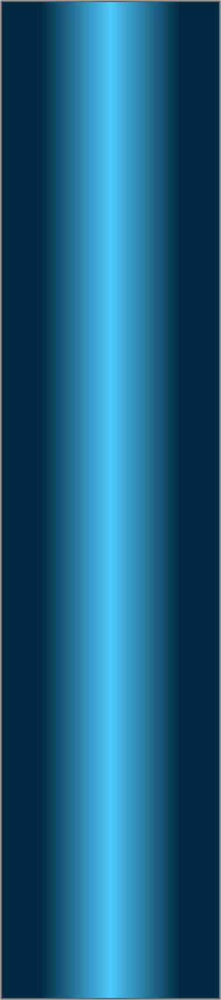
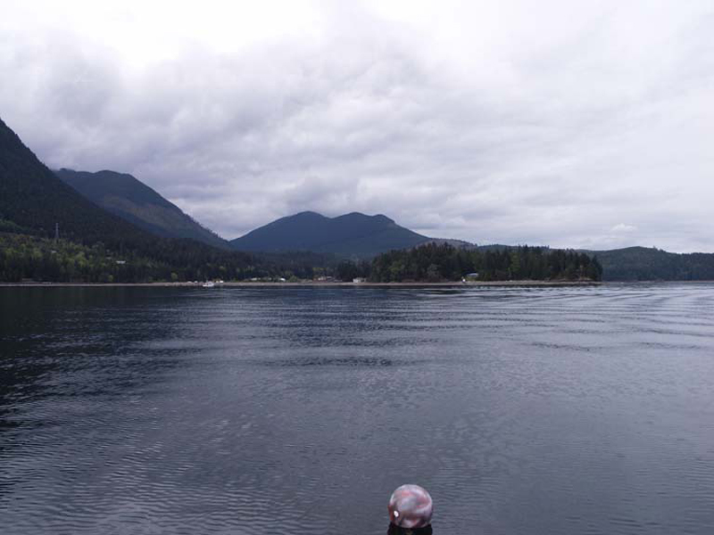
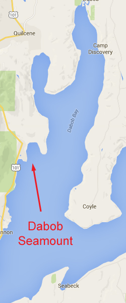

Dabob Seamount
Topography: Rocky pinnacle located offshore consisting of boulder fields and some walls.
Hood Canal marine life rating: 3
Hood Canal structure rating: 3
Diving depth: 75-85 feet
Highlight: Wolfeels and numerous species of rockfish residing near the small walls on the southeast corner of the pinnacle.
Skill level: Novice
GPS coordinates: N47° 43.433’ W122° 52.529’
Access by boat: The Dabob Bay Seamount is (surprise!) located in Dabob Bay. It is a few miles southwest of Pulali Point. No land-based reference points are nearby this offshore seamount. A buoy sometimes marks the east side of the seamount. If the buoy is not present, I find the seamount by searching around the GPS coordinates for a shallow anchorage in 20-30 feet of water. The top of the seamount is about 50 yards long (north to south) and 50 feet wide (east to west) with sides that drop at a moderate slope to depths of over 75 feet.
Shore Access: None
Dive profile: As of July 2016, there is indeed a dive site marker buoy at this site, and it an upgrade from the one in the site photo above which was taken years ago. The depth is about 20 feet from the marker buoy to the bottom on a low tide, so could be as much as 35 feet on a high tide.
I used to dive this site as I would with any seamount - descend the anchor line to the top of the seamount and head downslope to the desired depth, then circumnavigate the seamount. The seamount is not overly expansive and is easily circumnavigated on a single dive. Most of the area around the seamount is comprised of rocky boulders covered in broadleaf kelp. The rocky slope yields to a flat and silt-strewn bottom at around 75 or 80 feet.
However, now I just dive my favorite part of this site - a series of walls and boulders extending from the southeast corner of the pinnacle. I find healthy stocks of rockfish and lingcod packed into this area, along with wolf eels. The walls and rocks are about 10 feet high and cascade down to at least 90 feet. I really enjoy this part of the seamount. To get to this part of the seamount from the marker buoy anchor line, simply follow the slope down to the east, then follow the structure to the south.
My preferred gas mix: EAN 38
Currents observations: Tidal current in this area is negligible. I do not plan dives around slack or even minor exchanges. I consider the potential for wind driven current in my dive planning, but usually only dive this area when wind and seas are calm.
Boat Launch:
Seabeck boat ramp (east side of Hood Canal). Approximately 6 miles southeast from the dive site. This ramp requires a Washington Department of Fish and Wildlife and/or WA Discover Pass. It also offers no dock and a very shallow ramp - I only use this ramp at high tide.
Point Whitney boat ramp (west side of Hood Canal). Approximately 3 miles north from the dive site.
Facilities: None
Hazards:
Offshore location: There is no nearby shore to swim to in an emergency. This seamount is located approximately a half mile offshore.
Exposure: This site is susceptible to wind. Surface conditions can deteriorate quickly.
Boat traffic: Boat traffic in this immediate area is light to moderate, especially during boating or shrimping season.
Marine life: This site has definitely improved over time - namely due to the ban on bottom fishing in Hood Canal. Where as lingcod tended to be small and scarce, the lingcod population is now much more dense, and there are some absolute brutes. Descent sized aggregations of yellowtail and black rockfish are now readily found schooling in the light current off the walls, while plentiful vermilion, copper, and Puget Sound rockfish are usually found closer to the bottom. This site is living testimony that given a chance, fish stocks can recover. If they ever re-open bottomfish in this area, I am certain these health stocks would be obliterated within one season. The fish here are un-characteristically tame and approachable as they have not learned to fear spear-hunting divers.
The substrate is not the bountiful kaliedoscope of color that parts of the San Juans or Neah Bay is. However, there are defintely some intersting invertebrates to admire. Brilliant orange burrowing sea cucumbers and large white sea cucumbers dominate the seascape. Metridium of various shades and giant plumose anemones all add welcome contrast to the rocky seamount.
I often note crabs at this site that I do not commonly find elsewhere in Puget Sound, including almost comical looking squat lobsters and unusual lithoid crabs. Large Ohdner dorids frequent the rocks, as do large sea lemons and beautiful white lined dironas.
I have had good luck finding wolfeels on the southeast corner of the seamount. They tend make dens among the boulders at the base of the walls and will poke a head out to see what is going on when a diver passes. And if you get down to the 80-90 foot mark, look for a field of glorious white sea whips.
In summer month, there a lot of fried eggs jellies in this area. These jellies don't have a lot of sting, but every so often a lion's mane jelly will float through. If your lip gets stung by of these jellies, you will know it. Try not to rub the sting as it will just make it worse. The good news is the pain dissipates in about 6 hours.
Hood Canal marine life rating: 3
Hood Canal structure rating: 3
Diving depth: 75-85 feet
Highlight: Wolfeels and numerous species of rockfish residing near the small walls on the southeast corner of the pinnacle.
Skill level: Novice
GPS coordinates: N47° 43.433’ W122° 52.529’
Access by boat: The Dabob Bay Seamount is (surprise!) located in Dabob Bay. It is a few miles southwest of Pulali Point. No land-based reference points are nearby this offshore seamount. A buoy sometimes marks the east side of the seamount. If the buoy is not present, I find the seamount by searching around the GPS coordinates for a shallow anchorage in 20-30 feet of water. The top of the seamount is about 50 yards long (north to south) and 50 feet wide (east to west) with sides that drop at a moderate slope to depths of over 75 feet.
Shore Access: None
Dive profile: As of July 2016, there is indeed a dive site marker buoy at this site, and it an upgrade from the one in the site photo above which was taken years ago. The depth is about 20 feet from the marker buoy to the bottom on a low tide, so could be as much as 35 feet on a high tide.
I used to dive this site as I would with any seamount - descend the anchor line to the top of the seamount and head downslope to the desired depth, then circumnavigate the seamount. The seamount is not overly expansive and is easily circumnavigated on a single dive. Most of the area around the seamount is comprised of rocky boulders covered in broadleaf kelp. The rocky slope yields to a flat and silt-strewn bottom at around 75 or 80 feet.
However, now I just dive my favorite part of this site - a series of walls and boulders extending from the southeast corner of the pinnacle. I find healthy stocks of rockfish and lingcod packed into this area, along with wolf eels. The walls and rocks are about 10 feet high and cascade down to at least 90 feet. I really enjoy this part of the seamount. To get to this part of the seamount from the marker buoy anchor line, simply follow the slope down to the east, then follow the structure to the south.
My preferred gas mix: EAN 38
Currents observations: Tidal current in this area is negligible. I do not plan dives around slack or even minor exchanges. I consider the potential for wind driven current in my dive planning, but usually only dive this area when wind and seas are calm.
Boat Launch:
Seabeck boat ramp (east side of Hood Canal). Approximately 6 miles southeast from the dive site. This ramp requires a Washington Department of Fish and Wildlife and/or WA Discover Pass. It also offers no dock and a very shallow ramp - I only use this ramp at high tide.
Point Whitney boat ramp (west side of Hood Canal). Approximately 3 miles north from the dive site.
Facilities: None
Hazards:
Offshore location: There is no nearby shore to swim to in an emergency. This seamount is located approximately a half mile offshore.
Exposure: This site is susceptible to wind. Surface conditions can deteriorate quickly.
Boat traffic: Boat traffic in this immediate area is light to moderate, especially during boating or shrimping season.
Marine life: This site has definitely improved over time - namely due to the ban on bottom fishing in Hood Canal. Where as lingcod tended to be small and scarce, the lingcod population is now much more dense, and there are some absolute brutes. Descent sized aggregations of yellowtail and black rockfish are now readily found schooling in the light current off the walls, while plentiful vermilion, copper, and Puget Sound rockfish are usually found closer to the bottom. This site is living testimony that given a chance, fish stocks can recover. If they ever re-open bottomfish in this area, I am certain these health stocks would be obliterated within one season. The fish here are un-characteristically tame and approachable as they have not learned to fear spear-hunting divers.
The substrate is not the bountiful kaliedoscope of color that parts of the San Juans or Neah Bay is. However, there are defintely some intersting invertebrates to admire. Brilliant orange burrowing sea cucumbers and large white sea cucumbers dominate the seascape. Metridium of various shades and giant plumose anemones all add welcome contrast to the rocky seamount.
I often note crabs at this site that I do not commonly find elsewhere in Puget Sound, including almost comical looking squat lobsters and unusual lithoid crabs. Large Ohdner dorids frequent the rocks, as do large sea lemons and beautiful white lined dironas.
I have had good luck finding wolfeels on the southeast corner of the seamount. They tend make dens among the boulders at the base of the walls and will poke a head out to see what is going on when a diver passes. And if you get down to the 80-90 foot mark, look for a field of glorious white sea whips.
In summer month, there a lot of fried eggs jellies in this area. These jellies don't have a lot of sting, but every so often a lion's mane jelly will float through. If your lip gets stung by of these jellies, you will know it. Try not to rub the sting as it will just make it worse. The good news is the pain dissipates in about 6 hours.



Lingcod
Long Ray Star
Wolf Eel
Vermilion Rockfish
California Berthella
Underwater imagery from this site


Lingcod
Rock Crab

Composite Photography From Dabob Seamount